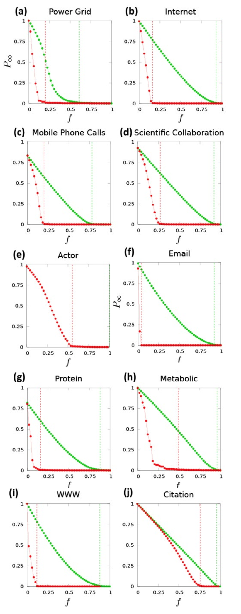

Análisis de Redes Sociales
Guillermo Jiménez Díaz (gjimenez@ucm.es)
Alberto Díaz (albertodiaz@fdi.ucm.es)
9 de enero de 2015
Tema 9: Robustez de las redes
Robustez
- El fallo de un componente sencillo en un sistema complejo puede provocar un error o un fallo general de todo el sistema
- Muchos sistemas naturales y sociales tienen la capacidad de permanecer inmutables aunque varios de sus componentes fallen
- En la mayoría de estos sistemas, la robustez se consigue gracias a densas interconexiones entre los componentes.
Robustez
En este tema veremos el rol de las redes con el fin de asegurar la robustez de un sistema complejo
- Conocer la robustez del sistema
- Conocer sus debilidades en caso de ataques premeditados
- Conocer los comportamientos de fallo en cascada
- Mejoras de la robustez
Robustez, Errores y Ataques
Robustez
La robustez implica entender cómo se va a comportar una red en caso de que eliminemos nodos de la misma
- Fragmentación de la red, es decir, cómo se rompe la red en comunidades aisladas a medida que eliminamos nodos.
- Tolerancia a errores, es decir, cómo de largas pasan a ser las distancias en la red a medida que eliminamos nodos.
Errores y Ataques
Los errores consisten en la eliminación de nodos de manera aleatoria
Los ataques consisten en la eliminación de nodos seleccionándolos de una manera deliberada.
Simularemos los ataques eliminando los nodos en orden decreciente de grado
Teoría de la percolación
Teoría de la percolación
La teoría de la percolación describe el comportamiento universal de los clusters y componentes de una red aleatoria
- Suponemos que tenemos una cuadrícula
- En cada intersección podemos poner un nodo
- Dos nodos estarán conectados si están en intersecciones adyacentes
- Construimos una red aleatoria decidiendo si ponemos o no un nodo en cada intersección con probabilidad \(p\).
Teoría de la percolación
Predice el tamaño medio de los clusters y el tamaño del cluster mayor suponiendo que vamos añadiendo nodos de manera aleatoria
Existe un valor crítico \(p_c\) a partir del cual emerge un componente gigante al que pertenecerán la mayoría de los nodos.
Importante para entender cuál es la robustez de una red aleatoria
Robustez en redes aleatorias
Fragmentación
Podemos estudiar la robustez de una red aleatoria usando, a la inversa, la teoría de la percolación
- Partimos de una cuadrícula en la que en todas las intersecciones hay nodos
- Eliminamos los nodos con una determinada probabilidad \(f\)
Fragmentación
Al igual que durante la creación, existe un umbral \(f_c\):
- Si \(0<f<f_c\) entonces continuamos teniendo un componente gigante en la red.
- Si \(f=f_c\) entonces el componente gigante comienza a desvanecerse y la red se empieza a fragmentar.
- Si \(f>f_c\) entonces la red queda completamente rota en muchos clusters pequeños.
Fragmentación
Cálculo aproximado de este umbral crítico \(f_c\):
\[f_c = 1- \frac{1}{\frac{\langle k^2 \rangle}{\langle k \rangle}-1}\]
Para una red aleatoria, en la que el segundo momento es conocido:
\[f_c^{ER} = 1- \frac{1}{\langle k \rangle}\]
Conclusión: cuanto más densa sea la red, mayor es el umbral \(f_c\).
Fragmentación
Conclusión: la fragmentación de la red debido a fallos no es un proceso gradual
- Inicialmente, la eliminación de una pequeña fracción de nodos no afecta a la integridad de la red
- Existe un punto crítico a partir del cual la red se rompe abruptamente en pequeños grupos de nodos desconectados.
Tolerancia a errores
Cómo evoluciona el diámetro de la red a medida que eliminamos nodos de manera aleatoria a medida que aumentamos \(f\).
Tolerancia a errores
Conclusión: El diámetro de la red crece de manera monótona para valores muy pequeños de \(f\)
- La mayoría de los nodos tienen aproximadamente el mismo grado
- Todos contribuyen aproximadamente de la misma forma al diámetro de la red
- La desaparición de cualquiera de ellos hace que las distancias vayan creciendo.
- Cuando alcancemos \(f_c\) el diámetro divergirá ya que romperemos el componente gigante.
Comportamiento frente a ataques
- Se decide deliberadamente qué nodos de la red queremos eliminar en cada momento
- Simular un ataque eliminando los nodos en orden decreciente de su grado \(k\)
Comportamiento frente a ataques
Desde el punto de vista de la fragmentación
Comportamiento frente a ataques
Conclusión: la fragmentación de la red evoluciona de la misma forma ya sea por errores o por ataques
- Esto se debe a que todos los nodos tienen un grado similar
- Un ataque deliberado no es más efectivo que los errores aleatorios en una red aleatoria.
Comportamiento frente a ataques
Comportamiento frente a ataques
Conclusión: las distancias en la red evolucionan de la misma forma ya sea por errores o por ataque
- El ataque a los nodos de mayor grado sigue haciendo que la distancia crezca de manera monótona
- No se ve diferencia apreciable con respecto a la tolerancia a errores.
Comportamiento frente a ataques
Conclusión: las redes aleatorias son resistentes a ataques
Conclusión: Su resistencia es similar para errores aleatorios que para ataques
Robustez en redes libres de escala
Fragmentación de la red
Las simulaciones con datos reales (Internet) y con redes creadas a partir del modelo de Barabasi-Albert demuestran que la teoría de la percolación no es aplicable a este tipo de redes.
Fragmentación de la red
Conclusión: las redes libres de escala son extremadamente robustas a errores aleatorios
- El umbral \(f_c\) a partir del cual se rompe el componente gigante y la red queda rota en pequeños clusters es cercano a 1
- Desde el punto de vista de Internet, esta conclusión nos dice que sería necesario que prácticamente todos los routers existentes fallasen para que esta gran red quedase fragmentada.
Fragmentación de la red
\[f_c = 1- \frac{1}{\frac{\langle k^2 \rangle}{\langle k \rangle}-1}\]
- Redes libres de escala con \(\gamma<3\) y \(N\to \infty\) el segundo momento diverge por lo que \(f_c\) converge a 1
- Confirma que es necesario eliminar casi todos los nodos de este tipo de red para que se produzca una ruptura en la red.
Fragmentación de la red
Ejemplo: Internet (\(\langle k \rangle = 6,34\), \(\sigma=14,14\))
\[\langle k^2 \rangle = \sigma^2 + \langle k \rangle^2 = 240,1296\]
\[\frac{\langle k^2 \rangle}{\langle k \rangle} = 37,8753\]
\[f_c = 1-\frac{1}{\frac{\langle k^2 \rangle}{\langle k \rangle}-1} = 0,9728\]
Esto implica que deberían fallar unos 220000 routers (que son aproximadamente el 97% de esta red de \(N=228263\)).
Fragmentación de la red
- Los hubs son mucho menos abundantes que los nodos con menor grado
- Los errores aleatorios eliminarán, con mayor probabilidad, uno de estos nodos con grado pequeño antes que un hub
- Estos pequeños nodos contribuyen poco en mantener la integridad de la red
Tolerancia a errores
Conclusión: el diámetro permanece prácticamente inalterable ante errores aleatorios en la red
- Los hubs son los grandes responsables de que las distancias dentro de la red sean cortas
- Un error aleatorio tiene una baja probabilidad de afecta a estos hubs, lo que mantiene las distancias prácticamente inalterables
Comportamiento frente a ataques
Desde el punto de vista de la fragmentación:
Comportamiento frente a ataques
Conclusión: es suficiente atacar solo una pequeña fracción de nodos para romper la red en pequeños grupos
- El umbral \(f_c\) cae drásticamente en el caso de producirse ataques, siendo extremadamente bajo
- Los primeros nodos eliminados en un ataque a una red libre de escala son los hubs, haciendo que la red se fragmente rápidamente con unos pocos nodos eliminados
- Malo: Internet es vulnerable a ataques
- Bueno: algunas bacterias son vulnerables si eliminamos algunas de sus proteínas “hub”
Comportamiento frente a ataques

Fallos en cascada
Fallos en cascada
- Hemos asumido que cada nodo puede ser eliminado de manera independiente sin afectar a otros nodos
- Suele ocurrir que la eliminación de un nodo provoca una sobrecarga en sus vecinos, lo que puede inducir al fallo de éstos
- Esto es lo que se conoce como fallos en cascada.
Fallos en cascada
Ejemplo: red eléctrica, formada por generadores, subestaciones y cableado. El fallo de una línea con una alta carga de electricidad hace que dicha electricidad se distribuya a líneas y subestaciones vecinas que, si no son capaces de aceptar dicha carga, caerán y redistribuirán su carga entre las vecinas… produciendo un efecto dominó o fallo en cascada
Fallos en cascada
Ejemplo: sistema financiero, en el que el estallido de la burbuja inmobiliaria en 2008 provocó la caída de algunas entidades financieras como Lehman Brothers, que hicieron caer a aseguradoras como AIG o a compañías hipotecarias como Fannie Mae o Freddie Mac, que hicieron caer a otras empresas… produciendo una crisis financiera a escala mundial
Fallos en cascada
Todos estos ejemplos tienen una serie de características comunes:
- Comienzan con un fallo de impacto limitado y local dentro de la red
- Este fallo se propaga a través de los enlaces, provocando fallos adicionales
Fallos en cascada
Modelos y simulaciones de fallos en cascada:
- Red eléctrica
- Cascadas de información en Twitter
- Terremotos
El impacto del fallo suele ser relativamente bajo, siguiendo una distribución de ley potencial
Fallos en cascada
\[p(s) \sim s^{-\alpha}\]
- \(s\) el tamaño del fallo
- \(\alpha \in [1.6, 2]\) en la red eléctrica
- \(\alpha \simeq 1,75\) en las cascadas de información en Twitter
- \(\alpha \simeq 1,67\) para el impacto de los terremotos
Los impactos de estos fallos en cascada suelen ser generalmente bajos pero que existe la posibilidad de que algunos de estos fallos tengan un impacto a nivel global dentro de la red
Modelos de fallo en cascada
Modelos de fallo en cascada
- Para predecir el comportamiento de una red ante un fallo se suelen utilizar modelos y simulaciones
- Existen múltiples modelos, cada uno de ellos con mayor nivel de fidelidad de acuerdo a la red concreta que quieren modelar
Modelos de fallo en cascada
Elementos comunes:
- Los sistemas se caracterizan como redes por lo que existe un flujo entre nodos (de información en Twitter, de electricidad en la red eléctrica…).
- Cada componente tiene una regla local de fallo que determina cuándo va a intervenir en la propagación de la cascada.
- Cada sistema tiene un mecanismo para redistribuir el flujo a otros nodos cuando se produce el fallo de un componente.
Modelo de propagación de fallos
Modelo de propagación de fallos
- Modelo sencillo, propuesto por Duncan Watts
- Cada nodo se representa como un agente que puede estar en dos estados: 0 (activo) o 1 (inactivo o fallo)
- Cada agente se caracteriza por un umbral de fallo \(\phi\) que indica la fracción de vecinos que han de fallar para que él falle.
Modelo de propagación de fallos
La simulación consiste en lo siguiente:
- Inicialmente todos los nodos empiezan en el estado 0.
- En t=0 hacemos que una pequeña fracción de agentes cambien su estado a 1.
En los siguientes pasos de tiempo, se selecciona aleatoriamente un agente y actualizamos su estado:
- Si este agente está en el estado 0 y si al menos un fracción \(\phi\) de vecinos está en el estado 1 entonces este nodo falla (cambia al estado 1).
- En otro caso, el agente permanece en su estado.
Modelo de propagación de fallos
Estudiado en redes aleatorias de acuerdo a dos métricas:
- La probabilidad de que una cascada global surja a partir del fallo de un nodo.
- La distribución del tamaño esperado de la cascada.
Ambas dependen del grado medio \(\langle k \rangle\) y del umbral de fallo \(\phi\) de los nodos.
Modelo de propagación de fallos
Las simulaciones muestran 3 etapas o regímenes:
Regimen Subcrítico
- Si \(\langle k \rangle\) es alto, el cambio en el estado de un nodo prácticamente no afecta a otros nodos, independientemente del umbral de fallo que presenten
- La cascada suele morir rápidamente
- El tamaño de la cascada sigue una distribución exponencial
Modelo de propagación de fallos
Las simulaciones muestran 3 etapas o regímenes:
Regimen Supercrítico
- Si \(\langle k \rangle\) es bajo entonces es probable que sus vecinos sobrepasen el umbral, produciendo una cascada global
- La más mínima perturbación puede generar un fallo en cascada
Modelo de propagación de fallos
Las simulaciones muestran 3 etapas o regímenes:
Regimen Crítico
- En el límite entre los regímenes anteriores nos encontramos con que los fallos en cascada pueden tener un tamaño diferente
- Las simulaciones muestran que el tamaño de la cascada en una red aleatoria sigue una distribución de ley potencial con \(\alpha = \frac{3}{2}\)
Modelo de propagación de fallos
Modelo de sobrecarga
Modelo de sobrecarga
- Simular los fallos en las redes eléctricas
- Asume que cada nodo tiene una capacidad inicial y que cada fallo afecta a la capacidad de cada uno de los nodos de la red
- Un fallo no solo afecta de manera local (a sus vecinos) sino que afecta de una manera mucho más global.
- Este modelo es independiente de la estructura de la red
Modelo de sobrecarga
- Partimos de una red de \(N\) nodos en los que cada uno tiene un límite de carga \(L^{fail}\). Cada nodo \(i\) comienza con una carga inicial \(L_i\) asignada aleatoriamente en el intervalo \([L_{min}, L_{max}]\).
- En \(t=0\) añadimos una carga \(D\) a cada uno de los nodos.
- Si algún nodo falla, éste distribuye a todos los nodos una carga adicional \(P>0\). Esto puede provocar que, nuevamente, otros nodos fallen y distribuyan una nueva carga adicional \(P\).
Modelo de sobrecarga
En este modelo también se pueden distinguir tres regímenes:
Regimen Subcrítico
- Si la carga inicial media \(L\) está por debajo de un determinado umbral entonces la perturbación no afecta a la red
- No se detectan cascadas globales.
Modelo de sobrecarga
En este modelo también se pueden distinguir tres regímenes:
Regimen Supercrítico
- Si la carga inicial media \(L\) está por encima de un determinado umbral entonces la perturbación se propagará
- La distribución del tamaño de la cascada sigue una bimodal que muestra la coexistencia de cascadas muy pequeñas o muy grandes.
Modelo de sobrecarga
En este modelo también se pueden distinguir tres regímenes:
Regimen Crítico
- En el límite entre los regímenes anteriores nos encontramos con que los fallos en cascada pueden tener un tamaño diferente
- Las simulaciones muestran que el tamaño de la cascada sigue una distribución de ley potencial con \(\alpha = \frac{3}{2}\).
Modelo ramificado
Modelo ramificado
- El modelo ramificado o branching model es un modelo muy simple que sirve para resolver analíticamente la distribución del tamaño de la cascada
- Representa en forma de árbol las características básicas de un fenómeno en cascada a partir de los datos históricos de dicha cascada
- En la raíz se coloca el nodo cuyo fallo ocasiona la posible cascada.
- En las ramas colocamos los nodos cuyo fallo se produjo como consecuencia del fallo de su nodo padre.
Modelo ramificado
Si no se usa un histórico se puede modelar de la siguiente forma:
- Partimos de un nodo activo.
- En cada paso \(t\) cada nodo activo produce \(k\) hijos, donde \(k\) se selecciona aleatoriamente de una distribución \(p_k\).
- Si \(k=0\) la rama muere y no se producirán nuevas propagaciones por dicha rama.
- Si \(k>0\) entonces se generarán \(k\) nodos activos, representados como hijos del último nodo activo.
El tamaño de la cascada será el número de nodos del árbol cuando no quede ningún nodo activo
Modelo ramificado
Este modelo también predice tres regímenes dependientes del valor de \(\langle k \rangle\) para la función de distribución \(p_k\)
Regimen Subcrítico
- Si \(\langle k \rangle<1\) en media cada nodo tendrá menos de un hijo
- El árbol morirá rápidamente
- El tamaño del árbol sigue una distribución exponencial
Modelo ramificado
Este modelo también predice tres regímenes
Regimen Supercrítico
- Si \(\langle k \rangle>1\) entonces en media cada nodo tendrá más de un hijo
- El árbol crecerá indefinidamente, lo que se interpreta como una cascada global.
Modelo ramificado
Este modelo también predice tres regímenes
Regimen Crítico
- Si \(\langle k \rangle=1\) entonces cada nodo tiene en media un hijo
- Algunos árboles serán muy grandes pero otros morirán rápidamente
- Las simulaciones muestran que el tamaño de la cascada sigue una distribución de ley potencial
Modelo ramificado
Se puede resolver analíticamente el tamaño de la cascada en función de la distribución \(p_k\):
Conclusiones de los modelos de propagación de fallos
Conclusión: se predice la existencia de un punto crítico en el que el tamaño de la cascada sigue una ley potencial
Este punto separa dos regiones bien diferenciadas:
- Una subcrítica en la que todas las perturbaciones mueren rápidamente.
- Una supercrítica en la que la mayoría de las perturbaciones se propagan a todo el sistema.
Mejorar la robustez de una red
Mejorar la robustez de una red
Alternativas:
- Diseñar redes robustas: Si tenemos la oportunidad de hacerlo podemos añadir nodos y/o enlaces de modo que la red sea más robusta que la inicial.
- Detener fallos en cascada: Como alternativa podemos implementar protocolos con los que detener un fallo en cascada de la red mediante la supresión temporal de algunos nodos y enlaces.
Diseño de redes robustas
Diseño de redes robustas
- La topología de la red es clave en la robustez de una red
- Redes libres de escala son especialmente seguras ante errores
- …pero son más vulnerables a ataques que las redes aleatorias
- Buscar topologías que sean simultáneamente robustas a ataques y a errores.
Diseño de redes robustas
- La topología más robusta a errores aleatorios es la topología en estrella (también conocida como hub-and-spoke)
- Para un gran número de nodos la red es extremadamente segura (ya que la probabilidad de que el error afecte al nodo central es de \(\frac{1}{N-1}\))
- El fallo (o ataque) del nodo central deja la red completamente aislada.
Diseño de redes robustas
- Red mejorada conectando los nodos periféricos entre sí
- Si el coste de construir y mantener la red es proporcional al grado medio \(\langle k \rangle\) de la red entonces esta alternativa duplica este coste (ya que hemos duplicado el grado medio de la red).
Diseño de redes robustas
¿Existe entonces alguna alternativa de mejorar la robustez manteniendo el coste, es decir, \(\langle k \rangle\) constante?
- \(f_c\) es el umbral a partir del cual la red queda fragmentada
- Depende de \(\langle k \rangle\) y \(\langle k^2 \rangle\)
Maximizar \(\langle k^2 \rangle\) dejando fija \(\langle k \rangle\)
Diseño de redes robustas
- Esto se consigue haciendo que la distribución de grados siga una distribución bimodal
- Los nodos solo tienen grados \(k_{min}\) o \(k_{max}\) (los dos valores extremos de la red).
- Estudios analíticos han demostrado que la mejor alternativa es una red en la que hay una fracción de \(r\) nodos con grado \(k_{max}\) y \((1-r)\) nodos con grado \(k_{min}\)
- La mejor topología es aquella en la que \(r=\frac{1}{N}\): un solo nodo de grado \(k_{max}\) y el resto de grado \(k_{min}\)
- El valor de \(k_{max}\) depende del tamaño de la red.
Diseño de redes robustas
- La probabilidad de eliminar el nodo central es baja
- Pero el ataque del nodo central mantiene el componente gigante intacto gracias a que el resto de los nodos tienen un \(k_{min}>1\) que los mantiene unidos
- Una buena forma de conocer la vulnerabilidad de la red es representar las curvas de errores y ataques
Detención de fallos en cascada
Detención de fallos en cascada
- Añadir nuevos enlaces puede mejorar la robustez de la red
- Esta alternativa suele ser inviable en redes como la eléctrica, en el que el coste en tiempo y dinero de añadir un nuevo enlace es muy alto
- Es completamente inviable en el caso de que se produzca un error y comience un fallo en cascada ya que, mientras que el fallo en cascada puede producirse en cuestión de minutos, la creación de nuevos enlaces puede tardar meses o años.
Detención de fallos en cascada
- Los bomberos eliminan árboles (a veces incendiándolos ellos mismos) para evitar que un fuego se propague
- Podemos eliminar nodos y enlaces de la red para evitar que una cascada se propague una vez que se ha iniciado un fallo
- Esta eliminación ha de ser selectiva y depende de los mecanismos de propagación y fallo de la red en sí misma
- Se recomienda la realización de simulaciones para conocer cómo minimizar el tamaño de la cascada sin provocar nuevos fallos en el sistema
Generalmente, estas simulaciones demuestran que lo más conveniente es eliminar nodos con baja carga y enlaces con un exceso de carga en la vecindad del fallo inicial.